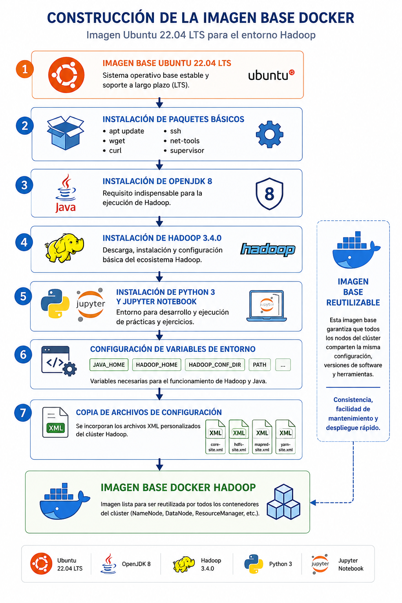
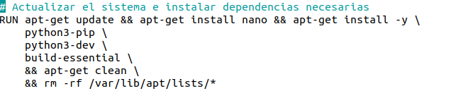
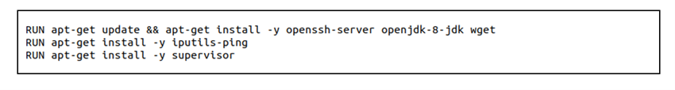
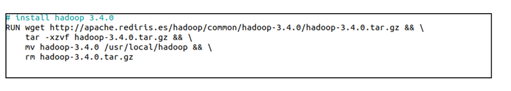
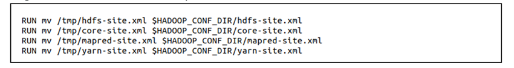

Capítulo 4. Arquitectura de Contenedores para el Despliegue del Entorno Big Data
Arquitectura de Contenedores para el Despliegue del Entorno Big Data
Arquitectura de Contenedores para el Despliegue del Entorno Big Data
La arquitectura desarrollada en este proyecto se fundamenta en una imagen base Docker común a todos los nodos del clúster Hadoop. Su objetivo es proporcionar un entorno homogéneo, reproducible y completamente preconfigurado sobre el que posteriormente se construyen los diferentes servicios especializados, como el NameNode, los DataNodes, el ResourceManager y los NodeManagers.
La imagen Docker parte de Ubuntu 22.04 LTS, seleccionado por su estabilidad, soporte a largo plazo y amplia compatibilidad con el ecosistema Big Data.

Figura. Imagen base Ubuntu 22.04 utilizada para construir todos los contenedores.
La imagen incorpora Python 3 y Jupyter Notebook, herramientas que serán utilizadas durante todo el curso para desarrollar ejercicios prácticos y ejecutar aplicaciones MapReduce mediante Hadoop Streaming.

Dado que Apache Hadoop está desarrollado sobre Java, la imagen instala OpenJDK 8, además de otras utilidades necesarias para el funcionamiento de los contenedores.
| Componente | Finalidad |
|---|---|
| OpenJDK 8 | Ejecución de Hadoop. |
| Supervisor | Gestión de procesos dentro del contenedor. |
| SSH | Comunicación entre nodos. |
| Herramientas Linux | Administración del sistema. |

Una vez instalado Java, se descarga e instala Apache Hadoop 3.4.0, versión utilizada durante todo el proyecto.

Durante la construcción de la imagen se configuran las variables de entorno necesarias para facilitar el funcionamiento de Hadoop y Java.
JAVA_HOME
HADOOP_HOME
HADOOP_CONF_DIR
HADOOP_COMMON_HOME
HADOOP_HDFS_HOME
HADOOP_MAPRED_HOME
HADOOP_YARN_HOME
PATH
Finalmente, la imagen incorpora los archivos de configuración personalizados que definen el comportamiento del clúster Hadoop.

Estos archivos contienen toda la configuración relativa al sistema HDFS, el motor MapReduce y el gestor de recursos YARN, permitiendo que todos los contenedores compartan exactamente la misma configuración.
La utilización de una imagen Docker común constituye uno de los pilares de la arquitectura propuesta. Gracias a este enfoque, todos los nodos del clúster comparten la misma configuración, reduciendo considerablemente la complejidad del despliegue y facilitando la administración de la infraestructura Hadoop.
El código completo utilizado para construir esta imagen puede consultarse en el Anexo 7.1, correspondiente al Dockerfile base del proyecto.